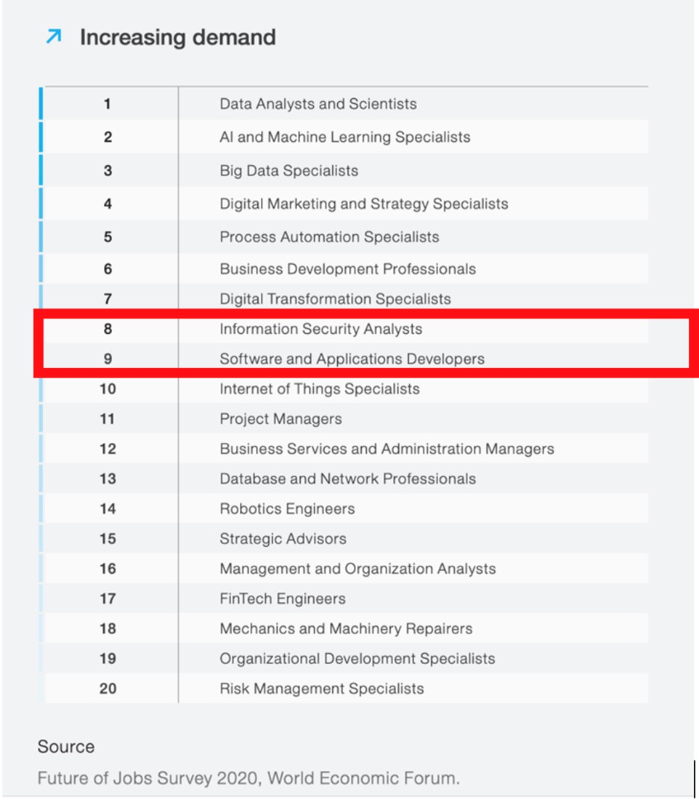
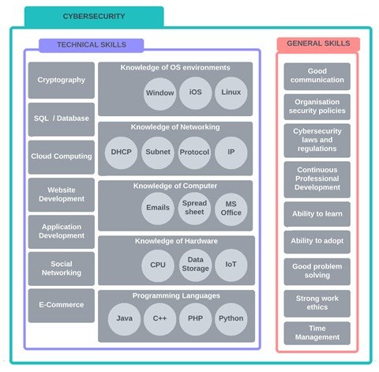
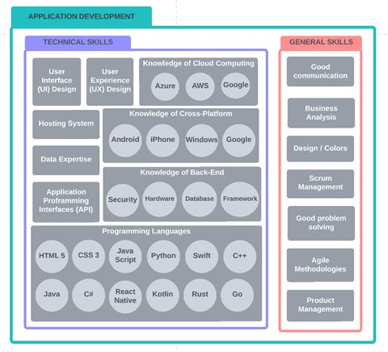

| Name | Ideal Job | Demand |
|---|---|---|
| Travis & Minnie | Penetration Tester | HIGH |
| Yumna | Web App developer | HIGH |
| Tessa | Front end developer | HIGH |
| Matthew | Senior Cyber Sec analyst | HIGH |
Cyber security – As outlined in the Cyber Security Sector Competitiveness plan 2017 (AustCyber 2017), demand for professionals in the cyber security industry is HIGH. At the time of this report, at least 11,000 more cyber security workers will be needed over the next decade. Viewing the burning glass data (BGI 2017) shows that between the 1st of March 2017 to the 28th of February 2018, 2,914 postings were available for Cyber Security professionals.
Mobile, Web and front-end development also scored high in demand:
50% of our team members are interested in cybersecurity as an ethical hacker, penetration tester and senior cyber security analyst. The other 50% group IT Roos are interested in Application development as a front-end developer, web app and mobile app development.
According to the U.S. Bureau Labor Statics (BLS, 2021)[1], the unemployment rate in Cybersecurity has been 0% since 2016 and predicted 35% growth rate between 2021 and 2031 which is a lot faster than average occupations. Also, the software development industry is growing faster than any other professionals.
According to World Economic Forum (2020)[2], the predicted Top 20 jobs increasing demand in future indicates Information Security Analysis followed by Software and Application Developers.
50% of IT Roos are interested in Cybersecurity – Ethical Hacker / Penetration.
In the Ethical Hacker role, it is essential to have the knowledge, skill and a lawful manner. They need general skills as well as technical skills as below: (Indeed Career Guide, 2021)
 As you can see from the above diagrams, both professionals are required to have very similar general skills, such as good communication skills, management skills and problem solving. Also, they are required to have a very broad knowledge of modern technology.
Easily obtained through certificates, study at a university level or even at TAFE. These writing skills allow for easy communication between teammates/management and sets a high standard too. This means und4rstanding intricate instructions and means the ability to explain highly technical processes and systems.
Many employers look fondly on those who have acquired experience with social media. Communicating a business content to potential clients and onlookers helps business. Creating search engine optimization and web analytics is also a very highly regarded skillset.
A ‘basic’ skillset to have, but in the IT industry the ability to code is a basic, yet highly sort after skill. Most IT professionals use coding on a daily bases. Most IT jobs require a certain level of web development, software programming and learning several languages is sort after.
Leadership is a highly sought-after skill that many employers seek. As many organisations and businesses have their employers working in a team, there will need to be someone there to organise, delegate and train employers to create more efficient work.
This is an essential skill for multiple people working together as a group. Good teamwork can produce better work at a faster rate. For teamwork to work efficiently, skills such as good communication are required.
Interpersonal skills are highly desired as creating good relationships with people can create a better work environment and lead to better teamwork. Skills that are desired in this category would be flexibility, motivation and empathy.
No, there is a gap in the market for Cyber security professionals and believe completing the right qualifications will make it easier to get into the industry.
No, the need for Cyber Security professionals is only going to grow as we move into the future. I see a great opportunity to gain a wholesome career I can be proud of by continuing to aim toward this goal.
No, I enjoy coding and helping build the assignment’s website for this project. I believe I will continue to be interested in this, and the need for front end developers is only growing.
No, I believe there is always a need for web developers as online platforms increase. Moreover, coding is something I indeed like it. So, learning the relevant skills will help me to achieve my ideal job.
Cybersecurity is rapidly growing and will grow more in the future. Ethical hackers are intelligent individuals with excellent computer skills, along with the ability to create and explore the computer software which required many years of training and studying. The markets need ethical hackers more as the data size grows and expand virtual world. Therefore, I believe I am at the right place at the right time to start new career.
AustCyber (2017) Australia’s Cyber Security Sector Competitiveness Plan 2017, AustCyber website, accessed 7Th October 2022. https://www.austcyber.com/tools-and-resources/sector-competitiveness-plan-2017
U.S. BUREAU OF LABOR STATISTICS (BLS) (2018). Information Security Analysts : Occupational Outlook Handbook: U.S. Bureau of Labor Statistics, U.S. BUREAU OF LABOR STATISTICS website, accessed 23rd October 2022. https://www.bls.gov/ooh/computer-and-information-technology/information-security-analysts.htm.
World Economic Forum (WEF) (2020). The Future of Jobs Report 2020, World Economic Forum website, accessed 23rd October 2022.
Indeed Career Guide (n.d.). 18 Key Skills for Data Analysts. [online] Available at: https://www.indeed.com/career-advice/resumes-cover-letters/skills-for-data-analyst.
Indeed Career Guide (2022) Top 11 Skills Employers Look for in Job Candidates accessed 20th October 2022. https://www.indeed.com/career-advice/resumes-cover-letters/skills-employers-look-for